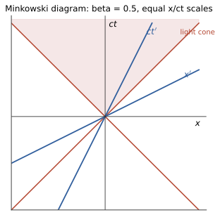

本页目录
狭义相对论 · 洛伦兹变换与四矢量
对标：任意近代物理教材 / Taylor–Wheeler ｜ 前置：mech-01、em-02 两条公理（相对性原理 + 光速不变）把牛顿的绝对时空整体重装。本页从公理推出洛伦兹变换，配齐三大效应与四矢量语言，终点是物理学最著名的公式——它是四动量守恒的一个分量。
学习层：先读时空图，再写洛伦兹变换
具体情境：站台与飞船的两次闪光
站台参考系记作 \(S\)，一艘飞船沿 \(+x\) 方向以速度 \(v\) 匀速经过。站台上的两个探测器分别在事件 \(A\)、\(B\) 闪光；站台观察者把它们安排在同一个 \(t\) 时刻，于是说“同时”。飞船上的观察者也会这样分组吗？先把每个闪光当作一个事件——一个时空点，而不是一颗在图上绕弯的粒子——再问它在另一套坐标中的位置。
为避免把单位混在一起，下面明确使用 \(c=1\)：时间用“光走过的距离”来量，因而 \(ct=t\)，纵轴写 \(t\) 而不是 \(ct\)；光线在图上满足 \(x=\pm t\)。最后我们会把一个事件 \(P\) 相对于原点事件 \(O\) 的 \((x,t)\) 与 \((x',t')\) 都列出来。
先预测：改变速度参数，哪些判断应该保持不变？
在打开实验前，先写下你的预测：当 \(\beta=v/c\) 从 \(0\) 增大到 \(0.6\) 时，\(x'\) 轴和 \(t'\) 轴会向哪两条光线靠近？对一个在 \(S\) 中满足 \(t=x\) 的事件，另一个观察者能不能把它变成类时或类空？若 \(S\) 中有两个事件满足同一 \(t\)，它们在 \(S'\) 中还会同一时刻吗？
实验中的“轴变斜”只是在同一张纸上表示两套坐标线，不是欧氏平面里的普通旋转：普通旋转保持 \(x^2+t^2\)，而相对论变换保持的是带符号的 \(t^2-x^2\)。视觉上的角度和长度不能直接当作物理角度和距离；真正可比较的是变换后的坐标与时空间隔。
最小模型：自然单位制下的双曲变换
只保留沿 \(x\) 方向的匀速相对运动。令 \(\beta=v/c\) 且 \(|\beta|<1\)，则
这里 \(x'\) 轴由 \(t'=0\) 定义，\(t'\) 轴由 \(x'=0\) 定义；同一 \(t'\) 的事件落在彼此平行的 \(x'\) 方向线上，这就是同时性的参考系依赖。\(\gamma\) 不是把整张图按同一个欧氏比例放大，而是变换中由 \(\beta\) 决定的因子；当 \(|\beta|\to1\) 时它发散。
可操作实验：拖动速度，追踪同一个事件
下面的实验台固定 \(c=1\)，让你改变 \(\beta\)，再选择类时、类光或类空事件，也可以直接拖动 \(x,t\)。图中蓝色是 \(S\) 的 \(x,t\) 轴，红色是 \(S'\) 的 \(x',t'\) 轴；虚线光锥是 \(x=\pm t\)。事件 \(P\) 的标记不随参考系改变，改变的是它的坐标标签。
无 JavaScript 时也可读：以下手算表使用 \(\beta=0.6\)、\(\gamma=1.25\)，坐标顺序均为 \((x,t)\)。用 \(x'=\gamma(x-\beta t)\)、\(t'=\gamma(t-\beta x)\)，并核对 \(s^2=t^2-x^2=t'^2-x'^2\)：
| 事件类型 | \(S\) 中 \((x,t)\) | \(S'\) 中 \((x',t')\) | \(s^2\)（两系相同） |
|---|---|---|---|
| 类时 | \((1,2)\) | \((-0.25,1.75)\) | \(3\) |
| 类光 | \((2,2)\) | \((1,1)\) | \(0\) |
| 类空 | \((2,1)\) | \((1.75,-0.25)\) | \(-3\) |
- 先在纸上预测：正的 \(\beta\) 会把 \(x'\)、\(t'\) 轴推向光锥，但不会改变光锥本身。
- 选一个事件，代入上面的两条变换式，分别得到 \((x',t')\)。
- 计算 \(s^2\)；正、零、负分别对应类时、类光、类空，类型不能被换参考系改掉。
- 注意：\(t'=\text{常数}\) 是一组与 \(x'\) 轴平行的同时线，不是“把 \(t\) 轴转了一个欧氏角度”。
误区 / 边界：图形直觉必须服从度规
- 同时性不是绝对标签：\(t=\text{常数}\) 与 \(t'=\text{常数}\) 是不同的线；只有同一地点的两次事件（\(\Delta x=0\)）才直接给出固有时的关系。
- 因果类型是硬边界：\(s^2>0\) 的类时分离可以由低于光速的信号连接，\(s^2=0\) 是类光，\(s^2<0\) 的类空分离不能由因果信号连接；洛伦兹变换不能把三者互换。
- 不要用视觉量尺读物理量：轴靠近光锥不代表普通角度等于速度，也不代表所有坐标都按同一比例缩放；\(\gamma\) 与间隔不变式才是可检验的量。
- 模型边界：这里是平直时空中的惯性系、一个空间维度和 \(c=1\)；加速参考系、引力和三维空间要换用更完整的语言。实验滑块被限制在 \(|\beta|\le0.95<1\)，不会进入超光速或 \(\gamma\) 不定义的区域。
回到正式公式：不变量把图上的判断收紧
对任意两事件取差分，展开即可得到
因此实验不是“看起来旋转了一下”，而是在检查 Lorentz 变换保持 Minkowski 二次型；三种因果类型和光速不变都从同一个不变量获得统一解释。带回 \(c\) 的记号，只需把 \(t\) 换成 \(ct\)，便回到 \(s^2=c^2\Delta t^2-\Delta x^2\)。
1. 两条公理与洛伦兹变换

公理：① 物理定律在一切惯性系相同（相对性原理——伽利略的旧原理保留）；② 真空光速 \(c\) 对一切惯性系相同（Maxwell 方程的直接暗示：em-02 的 \(c = 1/\sqrt{\mu_0\varepsilon_0}\) 没给参考系留位置——相对论是电磁学的自洽性要求）。
洛伦兹变换【推导骨架】：线性性（惯性系间匀速直线互译）+ 光锥不变（\(x = ct \Rightarrow x' = ct'\)）+ 逆变换对称性，三条件唯一定出（沿 \(x\) 方向、\(\beta = v/c,\ \gamma = 1/\sqrt{1-\beta^2}\)）：
不变间隔（直接验证）：\(s^2 = c^2t^2 - x^2\) 不变——时空的"距离"是双曲型的（对比欧氏 \(t^2 + x^2\)；高代 VI 惯性指数 \((+,-,-,-)\) 的几何：洛伦兹变换 = 保持这个二次型的"双曲旋转"）。\(v \ll c\) 时退化为伽利略变换 ✓（新理论包含旧理论——对应原理第一次示范）。
2. 三大运动学效应（各配一行推导 + 一个实证）
- 同时的相对性：\(t' = \gamma(t - vx/c^2)\)——异地同时依赖参考系（一切"悖论"的解药：先问"哪两个事件、谁的同时"）；
- 时间膨胀 \(\Delta t = \gamma\,\Delta\tau\)（动钟慢；固有时 \(\tau\) = 随体时钟）。实证：μ 子寿命 2.2 μs、山顶产生却到达海平面——\(\gamma \sim 10\) 的续命（或在 μ 子系里看：大地在动、山变薄——下一条）；
- 长度收缩 \(L = L_0/\gamma\)（沿运动方向）。速度合成 \(u' = \frac{u - v}{1 - uv/c^2}\)（两次变换复合）：光速不可超越在公式里自洽（\(u = c \Rightarrow u' = c\)）。
双生子"佯谬"一句话终审：往返者经历加速转向——两条世界线不对称，固有时 \(\int d\tau\) 短者年轻：不是悖论是世界线长度的比较（时空几何里"两点间直线固有时最长"——双曲几何的反直觉）。GPS 卫星每天 −7 μs（狭相）+45 μs（广相引力蓝移，gr-01）——不修正则定位每天漂移公里级：相对论是工程日用品。
3. 四矢量：把力学翻译进时空
四矢量：按洛伦兹变换变换的四元组 \(x^\mu = (ct, \mathbf x)\)；内积 \(a\cdot b = a^0b^0 - \mathbf a\cdot\mathbf b\) 不变（Minkowski 度规）。
四速度 \(u^\mu = \frac{dx^\mu}{d\tau} = \gamma(c, \mathbf v)\)（对固有时求导——保持四矢量身份）；四动量：
质能关系【推导】：低速展开 \(E = mc^2 + \frac12mv^2 + O(v^4)\)——动能之外多出常数项 \(E_0 = mc^2\)（静能）；不变量 \(p\cdot p = m^2c^2\) 给色散关系
（\(m = 0\) ⇒ \(E = pc\)：光子——em-03 辐射压的 \(P = I/c\) 在此认祖；核反应放能 = 质量亏损 × \(c^2\)：太阳与核电站的账本。）守恒律的正确表述：孤立系统四动量守恒（能量与动量合并成一条——Noether 语言：时空平移对称的四个生成元，mech-02 的表升级为四维版）。粒子对撞运动学从此是"四矢量内积"的代数题（例 3）。
电磁的四维改写一嘴【引用】：\((V/c, \mathbf A)\) 成四矢量、\(\mathbf E, \mathbf B\) 打包成场强张量 \(F^{\mu\nu}\)、Maxwell 方程缩成两条——电与磁是同一张量在不同参考系的投影（磁场 = 电场的相对论效应）：em 三页的内容在四维语言里获得最紧凑形态（ced/qft 线的记号基础）。
4. 练习与要点
例 1（γ 的手感） \(v = 0.6c\)：\(\gamma = 1.25\)；\(v = 0.99c\)：\(\gamma \approx 7.1\)；日常 \(v = 30\) km/s（地球公转）：\(\gamma - 1 \sim 5\times10^{-9}\)——相对论效应的"启动阈值"体感。
例 2（速度合成） 飞船 \(0.8c\) 上发射 \(0.8c\) 导弹：\(u = \frac{1.6c}{1 + 0.64} = 0.976c\)——不是 \(1.6c\)。在任一惯性系中，每束光都以 \(c\) 传播；两束反向光在同一坐标系中的坐标间距增长率可以是 \(2c\)，但不存在光子的静止参考系，因此不能把某束光当作参考系来定义二者的相对速度。
例 3（不变量法解对撞） 质子打静止质子造反质子（\(pp \to ppp\bar p\)）的阈能：不变质量 \(s = (\sum p^\mu)^2\) 在质心系算末态（\(4m\) 静止）、在实验室系算初态，令相等 ⇒ \(E_{\text{lab}} = 7mc^2 \approx 6.6\) GeV——四矢量内积一行解决的题，用三维动量守恒做是灾难：相对论运动学的标准姿势（Bevatron 设计能量的历史真题）。\(\blacksquare\)
下一页：波动光学——干涉、衍射与傅里叶光学：光既然是波（em-02），波该有的一切它都有。